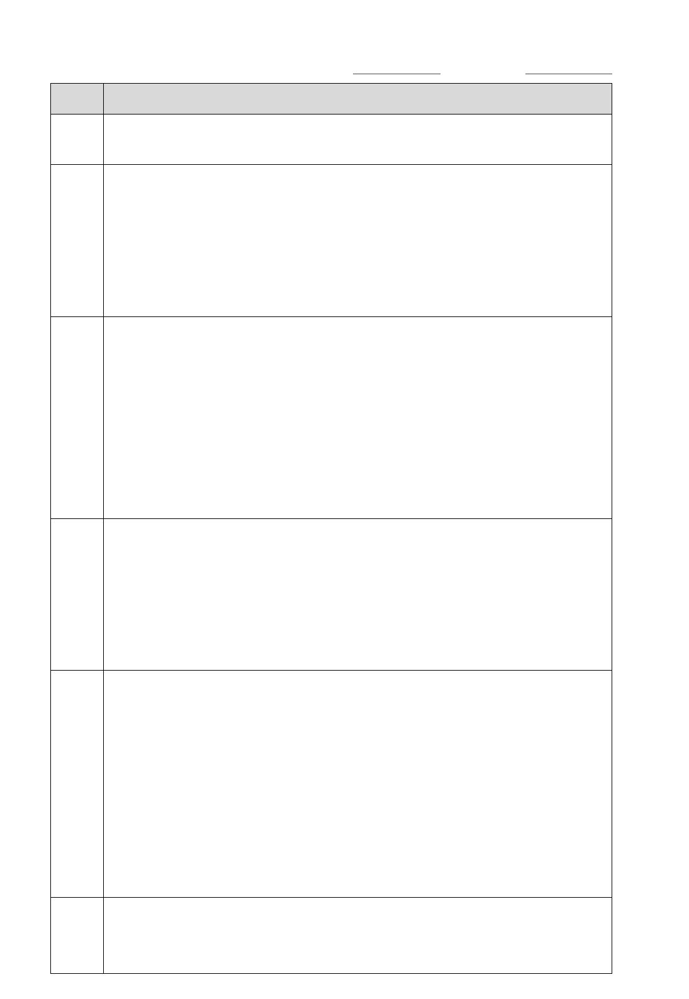
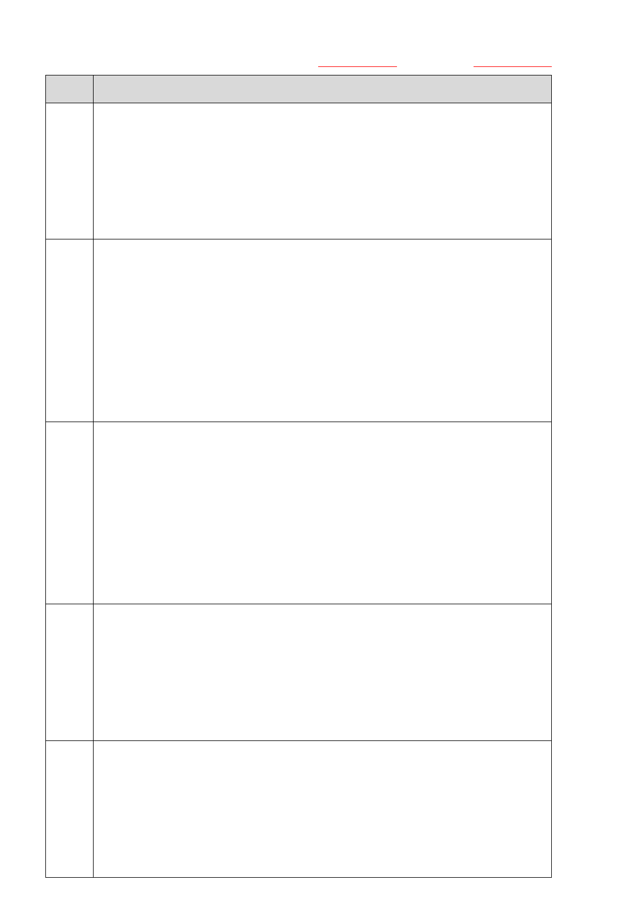
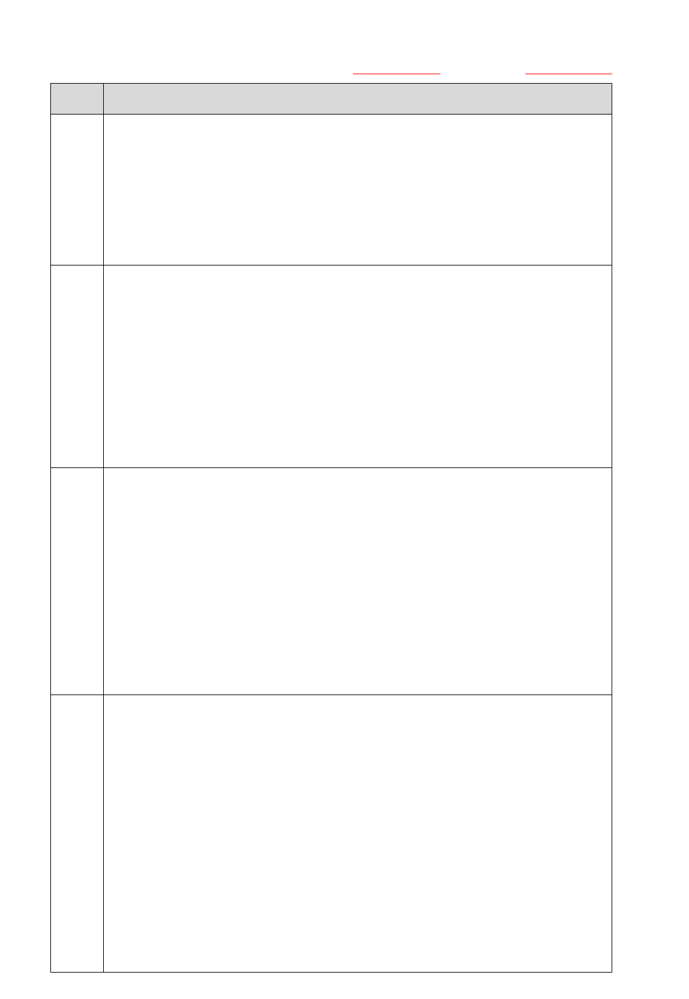
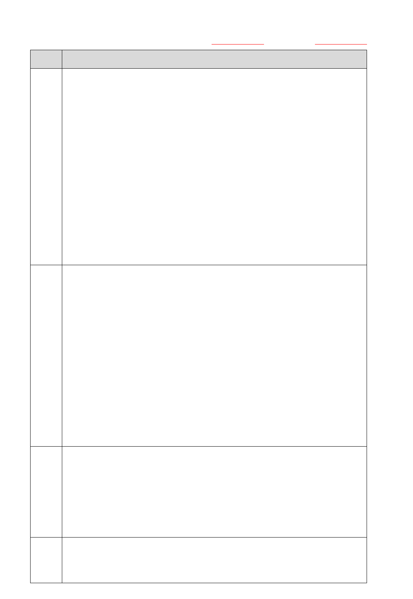
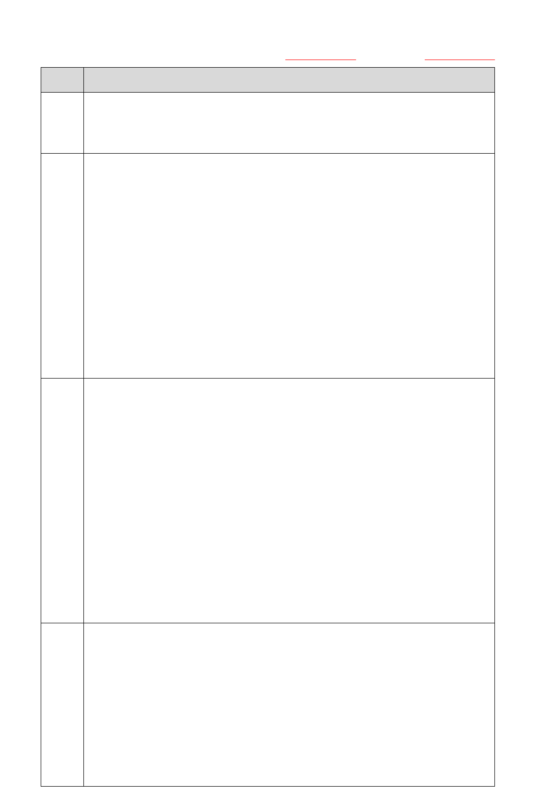
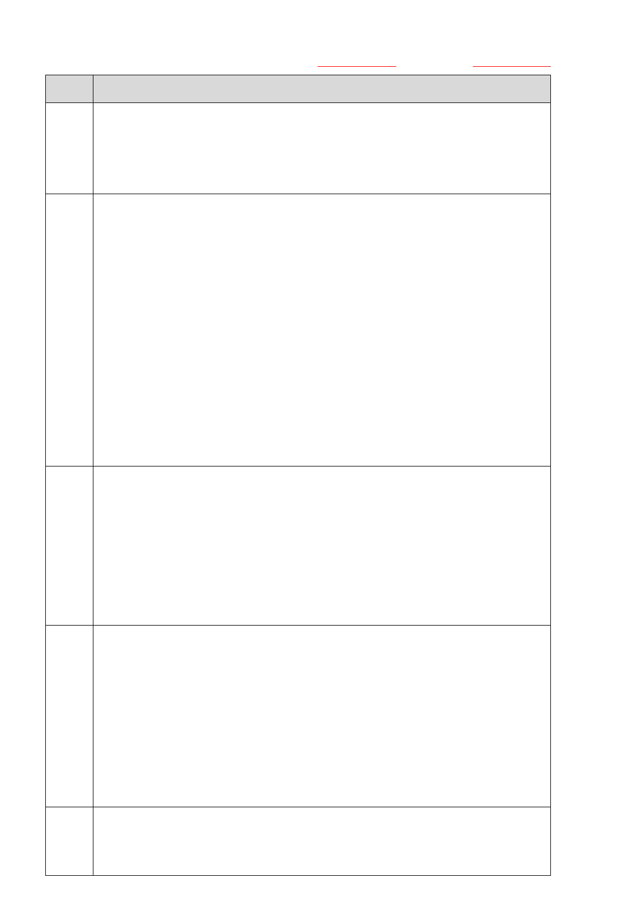
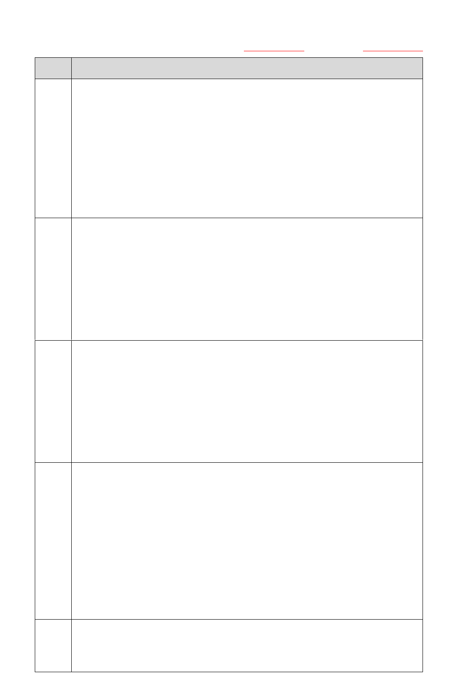
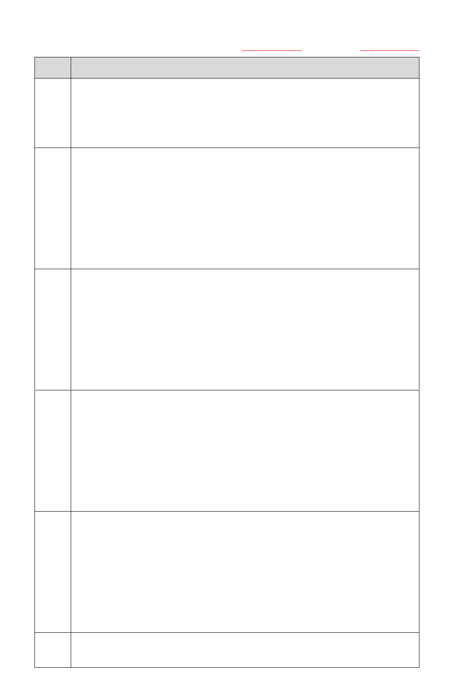
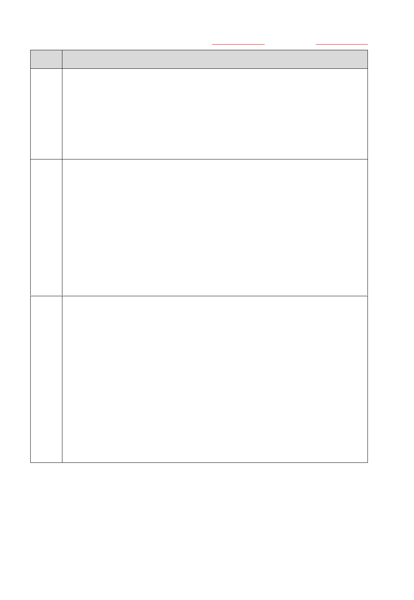

114 年第四次 AI 應用規劃師-初級能力鑑定【公告試題】
第二科：生成式 AI 應用與規劃
考試日期：114 年 11 月 01 日 試題公告日期：114 年 11 月 20 日
第 1 頁，共 13 頁
答案
題 目
B
1.
在 Low Code 平台的開發應用設計中，關於「模型（Model）」，下列敘述
何者最符合實際情況？
(A)模型僅扮演設計視覺化的輔助工具，對應用邏輯的影響有限；
(B)模型是用來抽象描述資料結構、業務流程與介面邏輯的核心元素，
影響應用的設計與維護；
(C)模型僅依循 UML（Unified Modeling Language）等傳統建模方式，
缺乏針對 Low Code 環境的延展性；
(D)模型在 Low Code 平台中已被自動程式碼生成全面取代，實際價值
有限
D
2.
企業在導入生成式 AI 平台時，往往需要利用分散於不同部門或機構中
的大量敏感文本資料。若希望在確保隱私的前提下，仍能讓模型持續優
化並降低資料外洩風險，下列哪一種方法最適合？
(A)同態加密（Homomorphic Encryption）；
(B)安全多方計算（Secure Multi-party Computation）；
(C)零知識證明（Zero-knowledge Proofs）；
(D)聯邦學習（Federated Learning）
B
3.
某企業利用 No Code/Low Code 平台開發內部營運系統。為確保系統在
跨部門流程與外部服務整合下仍具良好的可測試性（Testability），下
列哪一項作法最為合適？
(A)依賴 No Code/Low Code 平台提供的即時預覽與基本單元測試功能，
快速驗證常見流程；
(B)導入可重複執行的自動化測試流程，並透過 API 或服務虛擬化進
行模組化驗證；
(C)將測試聚焦於使用者介面互動與操作流程驗證，檢查系統表面功
能；
(D)依靠使用者回饋與正式上線後的監控資料，作為修正依據
A
4.
某社交平台嘗試結合自動提示工程（Automatic Prompt Engineer,
APE）與圖提示（Graph Prompting），讓 AI 協助分析使用者之間的互動
關係。在這個過程中，下列何者為最可能遇到的挑戰？
(A)圖結構轉換為文字提示時，可能導致部分關聯資訊遺失；
(B)APE 在圖資料上無法產生任何提示內容；
(C)圖轉文字後能完整保留所有上下文，對推理不造成影響；
(D)Graph Prompting 僅能處理線性路徑，限制多分支探索
D
5.
在超長上下文任務中使用自動提示工程（Automatic Prompt Engineer,
114 年第四次 AI 應用規劃師-初級能力鑑定【公告試題】
第二科：生成式 AI 應用與規劃
考試日期：114 年 11 月 01 日 試題公告日期：114 年 11 月 20 日
第 2 頁，共 13 頁
答案
題 目
APE）時，可能面臨的最大限制是什麼？
(A)迭代優化難以因應上下文的不斷變動，導致調整失效；
(B)模型的記憶容量有限，無法完整保留所有長篇資訊；
(C)提示內容難以有效分解，無法支援複雜任務拆解；
(D)回饋機制通常僅針對局部片段，難以全面評估最終輸出品質
B
6.
某設計團隊計畫在短時間內完成一款行動應用程式，必須同時達到高
度個人化體驗、快速生成介面與行銷內容自動產出等需求。若結合 No
Code/Low Code 平台與生成式 AI 技術，以下哪一種整合策略最能符合
目標？
(A)使用生成式 AI 自動產生 API 呼叫與元件配置，並由開發者手動整
合至 No Code 平台流程；
(B)透過生成式 AI 在 No Code 平台中自動建立介面模板，並結合使用
者數據即時生成個人化功能與行銷推播內容；
(C)在 No Code 平台中導入生成式 AI，快速建立跨專案可重用的通用模
組，專注於提升開發速度；
(D)在 No Code 平台中完全依賴生成式 AI 自動產生所有應用功能與流
程，不經人工設計或驗證
C
7.
某團隊希望讓 AI 自動查詢 GitHub 上的程式碼庫，並生成摘要給使用
者參考。開發者決定透過 Model Context Protocol（MCP）來實現，AI
需先發出請求，再經由 MCP 架構逐步完成查詢與回傳。在此情境下，
MCP 運作流程的正確順序為何？
(A)MCP Server→AI Host→MCP Client→資料查詢→結果回傳 AI
Host；
(B)MCP Client→AI Host→MCP Server→資料查詢→結果回傳 AI
Host；
(C)AI Host→MCP Client→ MCP Server→資料查詢→結果回傳 AI
Host；
(D)AI Host→MCP Server→MCP Client→資料查詢→結果回傳 AI Host
C
8.
在 Agent-to-Agent（A2A）架構中，不同代理人之間會分工合作。一般
而言，下列敘述何者最符合 Client Agent 與 Remote Agent 的互動流
程？
(A)Remote Agent 主動分派任務給 Client Agent；
(B)由人工事先設定 Client Agent 與 Remote Agent 處理任務的先後順
序；

114 年第四次 AI 應用規劃師-初級能力鑑定【公告試題】
第二科：生成式 AI 應用與規劃
考試日期：114 年 11 月 01 日 試題公告日期：114 年 11 月 20 日
第 3 頁，共 13 頁
答案
題 目
(C)Client Agent 發起任務，Remote Agent 執行並回傳結果；
(D)Client Agent 與 Remote Agent 同時處理任務並同步處理結果
B
9.
在導入生成式 AI 的應用規劃中，上下文工程（Context Engineering）
的核心目的為何？
(A)縮短模型訓練時間；
(B)優化提示與上下文；
(C)增加模型參數數量；
(D)優化 Fine-tuning 正確率
B
10.
某公司在導入生成式 AI 協助撰寫內部報告時，測試人員刻意在輸入的
上下文中放入互相矛盾的資訊（例如：同一位員工在不同段落被描述為
「入職三年」與「入職五年」）。在這種情況下，最常見的模型行為會是
什麼？
(A)永遠選擇第一段資訊作為答案依據；
(B)可能生成幻覺或隨機採信其中一方的內容；
(C)拒絕回答，並要求提供更一致的輸入；
(D)自動判斷並只選擇正確的資訊
A
11.
Agentic AI 在解決方案圖譜（Solution Graph）上尋找最佳解決路徑
時，通常會使用什麼樣的搜尋策略？
(A)使用廣度優先、深度優先或最佳優先等演算法進行探索；
(B)每一步都隨機選擇動作，反覆嘗試直到找到一條可行路徑；
(C)只執行事先假定的一條路徑，失敗就停止；
(D)完全依靠 LLM 一次性推斷最優完整路徑
C
12.
某企業考慮將開源大型語言模型（GPT-OSS）自行部署在本地伺服器，
以取代雲端服務。下列何者最能代表本地部署對企業的實際好處？
(A)可以達到無運算成本，因為本地部署模型不會產生額外的資源消
耗；
(B)模型的預測能力會比在雲端運行時更精度，因為本地環境更加可
靠；
(C)可確保輸入模型的敏感資料不會傳輸給第三方，提升資料隱私和自
主控制；
(D)以上皆是
D
13.
關於 GitHub Copilot，下列敘述何者正確？
(A)GitHub Copilot 基於程式碼片段查詢工具，透過後端搜尋大型程式
碼資料庫提供建議；

114 年第四次 AI 應用規劃師-初級能力鑑定【公告試題】
第二科：生成式 AI 應用與規劃
考試日期：114 年 11 月 01 日 試題公告日期：114 年 11 月 20 日
第 4 頁，共 13 頁
答案
題 目
(B)GitHub Copilot 僅適用於 GitHub 上的開源專案，無法在私有程式
碼庫或本地環境中提供程式碼補全建議；
(C)GitHub Copilot 利用靜態分析技術分析程式碼，根據邏輯流程推導
下一步應寫的程式碼；
(D)GitHub Copilot 由 OpenAI 的 Codex 模型提供技術支援，可即時在
開發者編輯程式碼時給出整行或整個函式建議
B
14.
某電商公司導入 Agentic AI 來處理客服工作。測試發現 Agent 在回答
產品 FAQ 時經常出錯，且無法幫客戶修改訂單。這種情況最可能是因
為缺少下列哪兩項工具或技術？
(A)API 調用（API Calling）＋ 任務規劃器（Task Planner）；
(B)向量資料庫檢索（Vector Retrieval）＋API 調用（API Calling）；
(C)向量資料庫檢索（Vector Retrieval）＋任務規劃器（Task
Planner）；
(D)任務規劃器（Task Planner）＋溫度參數（Temperature）設定
B
15.
某客服自動回應系統希望根據不同客戶群體調整回覆風格。在兼顧即
時性與效果的前提下，下列哪一種方案最適合？
(A)直接微調預訓練模型針對每個客戶群體分別訓練不同風格模型；
(B)利用控制變量（Control Tokens）或風格標籤在同一模型內動態調
整風格；
(C)利用生成對抗網路（GAN）生成不同風格文本，並透過人工篩選最終
答案；
(D)採用規則式替換方法，替換回覆詞彙以符合不同風格要求。
D
16.
在建置多代理大型語言模型（Multi-agent LLMs）系統時，如果沒有清
楚定義每個代理的任務啟動條件和角色分工，最可能出現什麼問題？
(A)回覆內容前後不連貫，系統邏輯斷裂；
(B)不同代理的答案互相衝突，無法判斷最終決策；
(C)系統陷入無限對話循環，導致資源耗盡；
(D)多個代理重複做同樣的任務，造成效率低落
D
17.
某公司部署結合 Fine-tuning 與檢索增強生成（RAG）的語言模型系統
作為內部文件助理。系統需同時確保回覆語氣一致、能即時查詢每日新
增文件、維持效能穩定，並避免頻繁重新訓練。在長期維護與效能平衡
下，下列哪一種策略最合適？
(A)每週重新 Fine-tune 模型，將新文件整合進模型知識，逐步取代 RAG
模組；

114 年第四次 AI 應用規劃師-初級能力鑑定【公告試題】
第二科：生成式 AI 應用與規劃
考試日期：114 年 11 月 01 日 試題公告日期：114 年 11 月 20 日
第 5 頁，共 13 頁
答案
題 目
(B)完全依靠基礎模型與 RAG，不進行 Fine-tune，僅透過提示設計控
制語氣；
(C)每日進行增量 Fine-tune，讓模型即時學習新文件內容，避免依賴
檢索；
(D)保留語氣相關 Fine-tuning，僅透過檢索系統更新文件內容，不頻
繁改動模型
D
18.
某客服系統在回覆「訂單取消政策」時，即使生成溫度固定為 0.6，回
覆品質仍常出現差異。調查顯示，檢索到的政策內容有時是最新版本，
有時則是過時文件，此外 Prompt 約束不足，微調語料也有模糊描述。
若要優先改善品質波動，應先解決下列哪一項問題？
(A)調整溫度參數，降低生成隨機性；
(B)加強 Prompt 設計，限制模型表達方式；
(C)優化微調語料，減少含糊描述；
(D)提升檢索系統品質，確保取得的政策內容正確且最新
B
19.
某醫院導入了一套智慧系統，由三個模組構成：語音辨識（ASR） → 語
言模型生成（LLM） → 查詢醫療資料庫 API。近期發現部分查詢結果
錯誤，例如醫師詢問「術後復健流程」時，系統卻誤判為要查詢「術前
注意事項」，因此查詢到錯誤的文件。經檢查已排除語音辨識的錯誤，
下列何者最可能是造成查詢錯誤的來源？
(A)醫療資料庫 API 對應規則設計不清，造成意圖映射模糊；
(B)LLM 的 Prompt 缺乏明確指示，導致語意分類判斷錯誤；
(C)查詢 API 回傳速度過慢，影響系統處理正確性；
(D)LLM 未經醫療領域微調，難以正確理解專業性詞彙
D
20.
某醫院正在規劃一個 AI 專案，目的是協助醫師從胸腔 X 光影像中判斷
是否存在肺炎徵兆，團隊卻誤將生成式 AI 模型運用於影像診斷。下列
哪一項最可能成為主要風險？
(A)模型在生成報告時語句流暢，但僅在文字表達上有差異，對診斷結
果沒有重大影響；
(B)模型若資料不足，僅會降低生成報告的完整性，而非影響判斷病灶
的正確性；
(C)模型偏向生成內容而非分類，但此差異僅影響效率，不會造成誤診
風險；
(D)模型可能生成與實際影像不符的診斷結論，導致誤判並引發醫療與
法律風險

114 年第四次 AI 應用規劃師-初級能力鑑定【公告試題】
第二科：生成式 AI 應用與規劃
考試日期：114 年 11 月 01 日 試題公告日期：114 年 11 月 20 日
第 6 頁，共 13 頁
答案
題 目
A
21.
某公司開發的智慧車載語音助理，可透過語音辨識（ASR）辨識駕駛語
音，再由 LLM 生成回答並查詢車載 API。測試中發現：ASR 對汽車專
業術語辨識錯誤率高；LLM 的回覆常不精確；系統回覆延遲雖存在但仍
可接受。若目標是「優先提升準確性與回答品質」，下列改進步驟的最
合理執行順序為何？
1. 擴充並標註汽車領域語音資料，微調 ASR 模型
2. 微調 LLM 並加入檢索增強（RAG）
3. 優化系統架構，引入批次推論降低延遲
4. 動態調整生成溫度，平衡準確度與多樣性
(A)1 → 2 → 4 → 3；
(B)2 → 1→ 3 → 4；
(C)1 → 3 → 2 → 4；
(D)3 → 1 → 2 → 4
C
22.
一家顧問公司使用生成式 AI 協助撰寫數據分析報告。雖然模型在測試
中表現優異，但其生成的報告多半僅遵循固定段落結構，替換數值或關
鍵詞即可完成，卻未能展現針對不同專案的多樣化推理與分析。下列何
者為造成這種現象的最合理解釋？
(A)模型在生成過程中缺乏對字體與排版的優化能力，因此無法展現分
析邏輯；
(B)測試資料涵蓋過多統計圖表，導致模型無法專注於文字內容的多樣
化表達；
(C)模型過度依賴訓練語料中的常見報告範式，導致生成結果以樣板化
結構取代真正的推理；
(D)模型因無法正確辨識報告中的頁碼與標題層級，才出現樣板化的結
果
D
23.
在應用零樣本提示（Zero-Shot Prompting）時，下列哪一種情境最可
能因缺乏示範而失敗，出現語意錯誤或結構錯誤的輸出？
(A)要求模型判斷一段影評文字的情感傾向；
(B)要求模型將一段新聞摘要濃縮為一句話；
(C)要求模型將一段繁體中文翻譯成英文；
(D)要求模型從表格中擷取所有城市的最高氣溫
D
24.
某保險公司計畫導入生成式 AI 的內部合約查詢系統，協助業務員與法
務部門快速解讀保單條款與理賠規範。高層特別強調客戶資料隱私與
合規風險控管，即使需要投入較多資源，也必須確保資料不會外洩。在
114 年第四次 AI 應用規劃師-初級能力鑑定【公告試題】
第二科：生成式 AI 應用與規劃
考試日期：114 年 11 月 01 日 試題公告日期：114 年 11 月 20 日
第 7 頁，共 13 頁
答案
題 目
此情況下，下列哪一種策略最符合公司的資料安全與合規優先考量？
(A)導入開源模型並由 IT 團隊自建，後續再逐步補強隱私與合規控管；
(B)在需求確認階段即納入法遵與稽核單位，設定準確率 KPI，並透過
MVP 驗證成效；
(C)優先使用雲端大型 API 模型快速部署，並根據使用數據持續調整；
(D)投入資源自訓並私有化部署 LLM，並同步建立自動化風控機制
B
25.
某新創公司開發一套圖像描述生成系統，能根據輸入的照片自動產生
說明文字。為了讓產生的描述文字能與圖片資訊精準對應，下列哪一種
設計思路最關鍵？
(A)強化語言模型的句法與流暢性，確保生成文字更自然易讀；
(B)在生成過程中結合圖片特徵與語言建模，讓模型同時利用影像內容
與文字資訊；
(C)調整生成策略（如 Beam Search 或溫度參數），以提升輸出文字的
合理性；
(D)專注於文字序列上下文的建模，只提升文字間的連貫性
C
26.
某電商平台希望生成的商品描述在風格與用詞上保持一致性，但不需
要新增專業知識。下列哪種方法最適合？
(A)擴充語料庫並微調模型，使風格統一；
(B)增加提示詞複雜度，引導模型風格一致；
(C)降低生成溫度，以減少隨機性並提升風格一致性；
(D)使用全連接神經網路對生成結果後期篩選
C
27.
某企業已建置 AI 語音記錄系統，並希望整合生成式 AI 進行「會議即
時摘要」功能，下列哪一種策略最能提升摘要的語意品質與使用價值？
(A)使用語音轉文字模型即時輸出逐字稿並轉入 GPT 摘要；
(B)將語音逐段切分並建立關鍵字索引，以利摘要模型從中擷取核心內
容生成會議重點；
(C)將語音轉文字後標註發言角色與主題邊界，結合語意分群進行動態
摘要；
(D)將所有語音內容儲存為完整紀錄，提供事後人工摘要比對用
B
28.
某公司正在開發一個智慧客服系統，負責回覆顧客關於退換貨、優惠活
動與商品建議等問題。研發團隊嘗試使用不同的提示設計方式來提升
模型效能。下列哪一個提示最符合「少樣本提示（Few-Shot Prompting）」
的設計原則？
(A)「請回答顧客詢問：如何申請退貨？」；

114 年第四次 AI 應用規劃師-初級能力鑑定【公告試題】
第二科：生成式 AI 應用與規劃
考試日期：114 年 11 月 01 日 試題公告日期：114 年 11 月 20 日
第 8 頁，共 13 頁
答案
題 目
(B)「以下是兩組客服對話範例，請依照相同風格回覆新的顧客問題」；
(C)「請逐步分析顧客投訴的原因，並依照推理過程生成合適回覆」；
(D)「請以正式的語氣回覆顧客的提問」
C
29.
某投資公司導入生成式 AI，用於即時分析股市波動並提供市場背景資
訊。若希望 AI 能兼顧「即時性」與「可靠性」。下列哪一項設計最能有
效提升 AI 在即時股市分析上的表現？
(A)將 AI 系統連結至公司內部歷史交易資料庫，以便快速調用既有的
案例參考；
(B)調整模型的回應邏輯，讓 AI 優先輸出最新市場行情，而不是完整
的背景分析；
(C)建立與外部即時行情來源同步的查詢模組，確保 AI 能即時擷取最
新金融數據；
(D)增加訓練資料中模擬的金融危機與市場異常案例，以提升 AI 在特
殊情境下的表現能力
A
30.
某大型物流公司計畫導入 AI 系統，以改善客服與配送作業的效率。專
案團隊規劃了以下四個步驟，請問正確的執行順序為何？
1. 建立符合公司服務流程的 AI 對話邏輯與應答範本，確保顧客體驗
一致
2. 明確定義導入 AI 的目標並設定關鍵績效指標（KPI）
3. 蒐集與清理過往客服紀錄與配送相關資料，作為模型訓練素材
4. 評估並選擇合適的 AI 技術供應商或開源方案，確立技術方向與架
構
(A)2 → 3 → 4 → 1；
(B)3 → 2 → 1 → 4；
(C)2 → 1 → 3 → 4；
(D)1 → 4 → 3 → 2
B
31.
某跨國電商企業導入生成式 AI，協助處理顧客服務請求，並根據顧客
歷史訂單提供個人化建議。資安與法遵部門擔心 AI 在回覆時可能洩漏
顧客個資，若要在導入初期優先避免觸法風險，下列哪一項措施最符合
要求？
(A)在加密環境下導入完整的顧客訂單與行為資料，並透過嚴格存取控
管降低洩漏風險；
(B)實施資料最小化與去識別化，確保 AI 在訓練與生成過程中不直接
處理或暴露敏感個資；

114 年第四次 AI 應用規劃師-初級能力鑑定【公告試題】
第二科：生成式 AI 應用與規劃
考試日期：114 年 11 月 01 日 試題公告日期：114 年 11 月 20 日
第 9 頁，共 13 頁
答案
題 目
(C)強化模型的回覆審查流程，透過自動過濾與人工抽查結合，降低個
資外洩的機率；
(D)設定 AI 的角色與回覆範圍，讓其專注於客服相關內容，避免回答
其他敏感議題
A
32.
某國際銀行導入生成式 AI，用於彙整不同國家金融監管機構的合規規
範，建立跨國合規知識庫。由於各國條文表述方式不同，且監管要求具
有高度專業性與隱含邏輯，若要確保知識庫在後續查詢與生成報告時
能維持正確性與一致性，下列哪一項 AI 能力最為關鍵？
(A)具備跨語言專業術語對齊與條文語意抽取能力，能正確辨識不同國
家規範間的對應與差異；
(B)能自動最佳化文件檢索效率，縮短跨國法規查詢的延遲時間，提升
合規部門使用體驗；
(C)能將合規文件轉換為多種輸出形式（如簡報、摘要或法規清單），以
符合不同決策層級需求；
(D)具備根據歷史案例生成合規解釋的能力，協助新進員工快速理解法
規在實務上的應用
C
33.
在企業導入 MLOps（Machine Learning Operations）的過程中，除了
模型部署與維運挑戰外，仍可能面臨其他推動上的困難。下列何者為
No Code 平台最能有效解決的挑戰？
(A)自動化大量資料的標註與前處理，以降低數據準備成本；
(B)提升運算基礎設施的可擴展性，以因應大規模服務需求；
(C)透過可視化建模介面，降低技術門檻並促進跨部門協作；
(D)提供進階特徵工程能力，優化高維度數據的處理效率
B
34.
某醫療機構計畫導入生成式 AI 協助撰寫病歷摘要。在技術測試階段，
為確保系統能安全應用於臨床，最應優先關注下列哪一項指標？
(A)資料儲存與存取架構的完整性，確保長期運作過程中的數據可追溯
性；
(B)生成內容的醫療準確性與臨床一致性，避免出現錯誤或誤導性資
訊；
(C)模型在不同病例語境下的泛化能力，確保不因個別樣本而偏差；
(D)系統回應時間的穩定性，以支援醫療場域中可能的即時需求
B
35.
在即時客服系統的效能測試中，若針對延遲測試（Latency Testing）
進行評估，下列哪一項指標最能反映系統是否符合用戶即時互動需
求？
114 年第四次 AI 應用規劃師-初級能力鑑定【公告試題】
第二科：生成式 AI 應用與規劃
考試日期：114 年 11 月 01 日 試題公告日期：114 年 11 月 20 日
第 10 頁，共 13 頁
答案
題 目
(A)AI 模型在同一分鐘內可完成的回覆訊息數量；
(B)客戶從輸入問題到收到第一個完整回應所需的時間；
(C)客服系統能連續提供服務的運行時長；
(D)AI 產生回答時用詞的多樣性與表達創意程度
A
36.
某航空公司導入生成式 AI 聲控客服，提供航班與票務查詢。有人員透
過惡意提示，試圖讓系統洩漏內部安檢流程。在此情境中，下列何者為
降低提示攻擊（Prompt Injection）風險的最佳策略？
(A)導入輸入檢測與回應審核流程，防止敏感指令被執行；
(B)限制 AI 可回應的主題範圍，使系統僅回答非敏感的航班與票務查
詢，避免處理內部或敏感流程資訊；
(C)隨機變化回覆內容，讓攻擊者難以預測回應行為以增加攻擊難度；
(D)擴充與更新航班與票務資料來源，以提升模型的知識正確性與覆蓋
率
A
37.
在機器學習模型的實務應用中，常會出現數據漂移（Data Drift）的情
況。此現象主要是指下列哪一種情況？
(A)訓練時使用的資料分佈，與部署後實際輸入資料的統計特徵隨時間
逐漸出現差異，導致模型表現衰退；
(B)在資料前處理過程中，因特徵刪減或缺失補值不當，造成樣本資訊
量下降；
(C)模型對訓練數據擬合過度，在未知數據上泛化能力不足；
(D)後端資料庫因欄位定義或結構調整，導致特徵提取流程與原始設計
不一致
C
38.
某銀行導入生成式 AI 放貸審核系統，用於分析申貸人條件並生成初步
審核意見。測試過程中發現，模型對不同族群的核准率存在顯著差異，
可能引發演算法偏見問題。為降低此風險，下列哪一項措施最合適？
(A)提升模型運算速度與效能，以確保在大量申請中快速回應；
(B)全面移除與申貸人身份相關的敏感屬性，避免模型因變數影響而產
生偏差；
(C)導入資料與結果的公平性檢測流程，並依合規規範調整模型或決策
邏輯；
(D)減少訓練樣本數量，降低偏見被放大的可能性
A
39.
在提示工程（Prompt Engineering）的應用中，Chain-of-Thought（CoT）
與 Tree of Thoughts（ToT）各適用於不同的推理情境，請問以下兩個
情境，分別最適合採用哪一種方法？

114 年第四次 AI 應用規劃師-初級能力鑑定【公告試題】
第二科：生成式 AI 應用與規劃
考試日期：114 年 11 月 01 日 試題公告日期：114 年 11 月 20 日
第 11 頁，共 13 頁
答案
題 目
情境一：電商公司開發客服助理，用來協助客戶查詢退款流程與相關規
範
情境二：活動策劃團隊使用 AI 協助規劃多場跨部門行銷活動，需要同
時考量預算、場地、時程與人力資源，並比較不同方案的可行性。
(A)情境一採用 CoT，情境二採用 ToT；
(B)情境一採用 ToT，情境二採用 CoT；
(C)情境一與情境二都適合 CoT；
(D)情境一與情境二都適合 ToT
D
40.
在生成式 AI 的提示工程中，Graph Prompting 在處理複雜關係資料時，
為何通常比 Chain-of-Thought（CoT）更有效？
(A)Graph Prompting 幾乎不需要推理，只依靠圖結構即可得出結論；
(B)Graph Prompting 僅需單次提示，即可避免多輪推理的誤差累積；
(C)Graph Prompting 的生成速度通常更快，因此效率更高；
(D)Graph Prompting 能捕捉非線性結構與上下文關聯，適合處理網絡
化資訊
A
41.
在少樣本提示（Few-shot Prompting）僅能提供 1–2 個範例的情況
下，若遇到領域偏移（Domain Shift），下列何者為模型最可能面臨的
核心挑戰？
(A)範例數量過少，無法涵蓋新領域的多樣性，導致模型泛化不足；
(B)範例表徵有限，模型容易依賴單一樣本特性而降低適應力；
(C)範例覆蓋不足，使模型難以抽取跨領域的穩定模式；
(D)範例資訊過於稀缺，模型缺乏應對不同輸入情境的能力
A
42.
某金融機構導入檢索增強生成（Retrieval-Augmented Generation,
RAG）模型，用於客服文件查詢與自動回覆。由於大型模型運算成本過
高，若考慮引入知識蒸餾（Knowledge Distillation, KD）技術，下列
何者為帶來的主要效益？
(A)讓小型模型學習大型模型的知識，在降低運算成本的同時維持檢索
與生成品質；
(B)只能應用於語音或影像辨識，無法提升文字檢索生成效能；
(C)因為 RAG 已有檢索機制，因此無需額外蒸餾知識；
(D)僅能依賴特定 API 供應商才能使用，無法在自建模型中實現
D
43.
在評估大型語言模型，例如 7B、13B、175B 參數規模時，模型規模對基
準測試（Benchmark）結果的影響，下列哪一種說法最為恰當？
(A)小模型在正確調整下能超越大模型，因此模型大小並不重要；

114 年第四次 AI 應用規劃師-初級能力鑑定【公告試題】
第二科：生成式 AI 應用與規劃
考試日期：114 年 11 月 01 日 試題公告日期：114 年 11 月 20 日
第 12 頁，共 13 頁
答案
題 目
(B)大模型在多數情境下表現較好，但在特定任務上略遜於小模型；
(C)模型規模與基準測試結果完全無關，影響主要來自測試設計；
(D)模型越大，Benchmark 結果可能提升，但幅度取決於訓練數據品質
與資源配置
C
44.
在 AI 應用設計中，Model Context Protocol（MCP）與檢索增強生成
（RAG）都能擴展模型的能力，但兩者的核心差異主要為下列何者？
(A)MCP 擴展模型工具，但主要用於補足訓練資料不足；
(B)MCP 能標準化連接資源，但仍需依賴向量資料庫；
(C)RAG 常用於擴展知識庫內容，而 MCP 更著重於動態工具與 API 呼叫
的整合；
(D)RAG 透過統一協議，提升回答相關性
A
45.
下列哪一個資料集專門設計用於測試大型語言模型在多領域、多任務
語言理解中，涵蓋人文、科學與社會科學等領域，而非專門用於數學推
理或中文專業知識？
(A)MMLU；
(B)GSM8K；
(C)MATH；
(D)C-Eval
D
46.
某智慧工廠導入生成式 AI，協助產線工程師即時產生維修指引與操作
建議。下列哪一項並非團隊在系統設計中加入 Guardrails（防護機制）
的主要目的？
(A)檢查工程師輸入內容，避免觸發錯誤或危險需求；
(B)過濾與驗證 AI 輸出的維修指引，確保符合安全標準；
(C)確保生成的操作建議符合法規與產業安全規範；
(D)完整重建並追蹤 AI 模型的全部推理過程
B
47.
某顧問公司導入生成式 AI，協助團隊快速檢索並摘要長篇的法規文件。
為了改善檢索結果常出現不相關或過於分散內容的問題，下列何者為
團隊決定對文件進行文本切分（Chunking）的主要目的？
(A)讓模型在回答時能加快推理速度；
(B)提高檢索相關性與降低長上下文噪音；
(C)降低系統記憶體和硬體資源的負擔；
(D)使模型在生成回覆時更具創造性與多樣化
A
48.
某開發團隊在建置企業內部知識檢索系統時，選擇採用多向量檢索器
（Multi-vector Retriever），下列何者為協助提升系統查詢的完整性

114 年第四次 AI 應用規劃師-初級能力鑑定【公告試題】
第二科：生成式 AI 應用與規劃
考試日期：114 年 11 月 01 日 試題公告日期：114 年 11 月 20 日
第 13 頁，共 13 頁
答案
題 目
與精準度的主要方式？
(A)支援同時處理多種資訊表示，提升跨文本型態的檢索效果；
(B)透過多向量壓縮與共享權重方式，降低檢索過程的運算與儲存成
本；
(C)以切分並過濾文件片段，減少上下文長度帶來的 Token 負擔；
(D)透過調整生成階段的溫度參數，使模型在回覆時更穩定一致
D
49.
在 Agentic AI 的架構中，解決方案圖譜（Solution Graph）常被用來
輔助代理的任務執行，其主要作用為何？
(A)透過圖形結構完全取代大型語言模型的推理，讓代理只依靠圖演算
法完成任務；
(B)僅用於保存代理的輸出結果，方便後續檢視與審計，而不影響實際
推理流程；
(C)將代理限制在既定流程內，避免其產生偏離設計腳本的行為；
(D)作為代理在執行過程中的參考框架，用於組織決策步驟並支援任務
推理
C
50.
小明想開發一個部落格寫作工具，讓用戶輸入文章開頭後，系統自動幫
忙寫出後續內容，例如輸入「今天去了台北木柵動物園...」，系統就能
續寫。若要實現這樣的功能，最適合選擇下列哪一類任務？
(A)序列到序列建模（Sequence-to-Sequence Modeling），透過輸入序
列產生新的輸出序列；
(B)遮罩語言建模（Masked Language Modeling），補齊文字中缺失的
詞語或片段；
(C)生成式語言建模（Text Generation），依據上下文持續產生新的內
容；
(D)文本分類（Text Classification），針對輸入文本判斷情感、主題
或標籤
《以下空白》